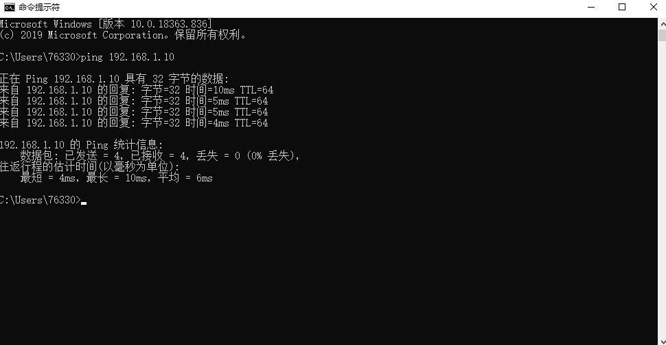
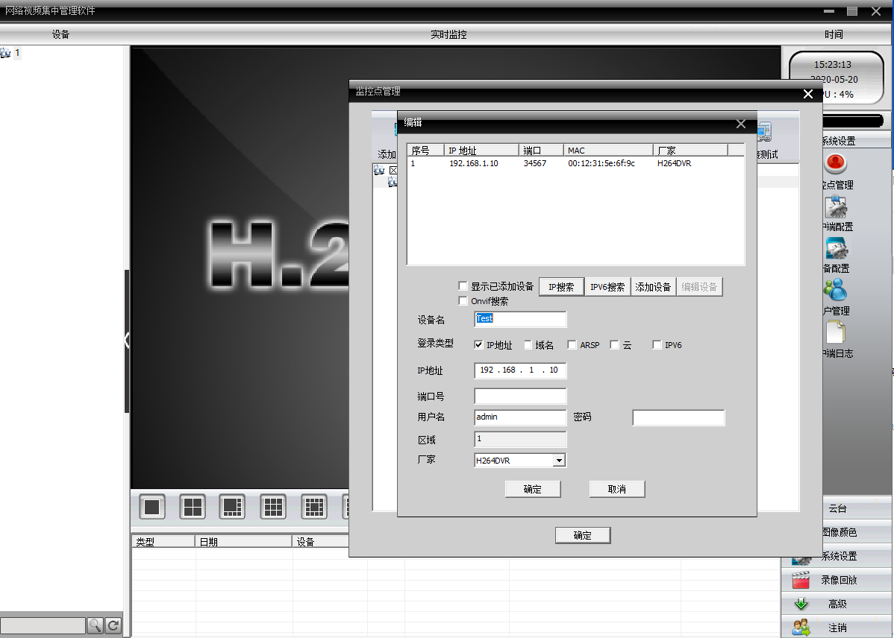
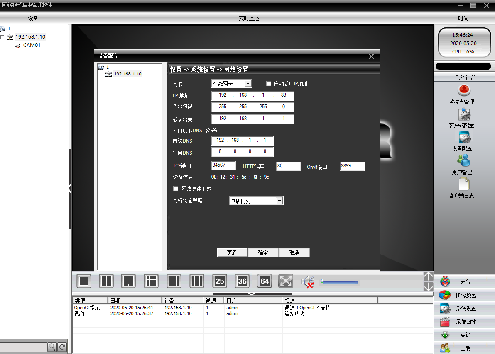
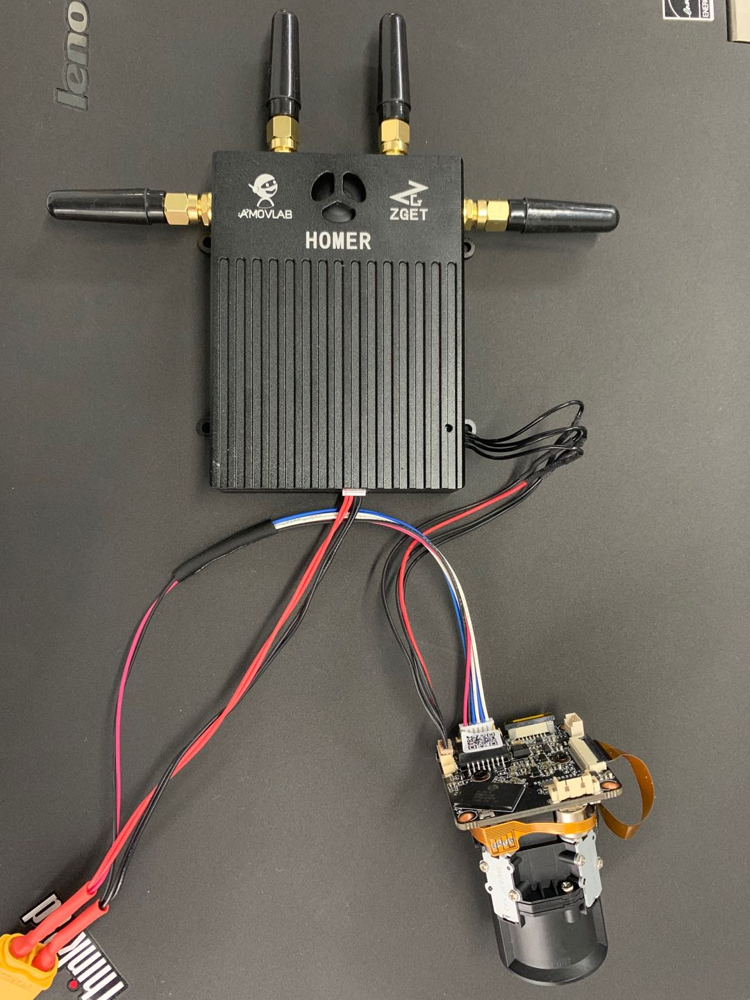
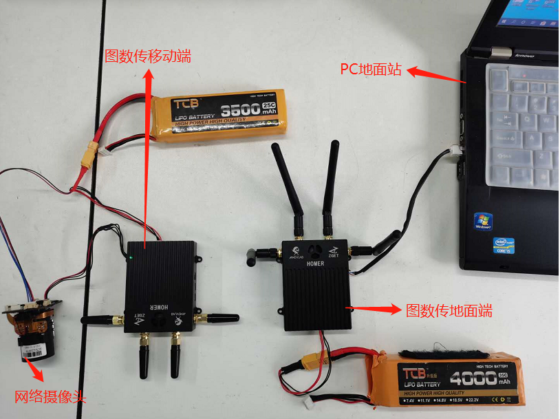
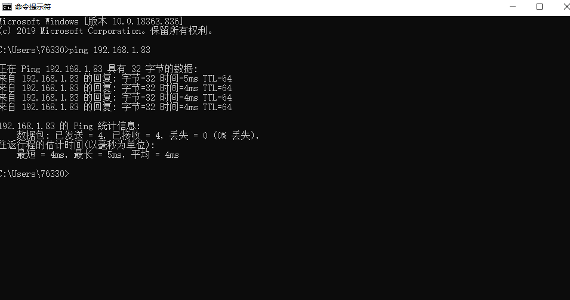
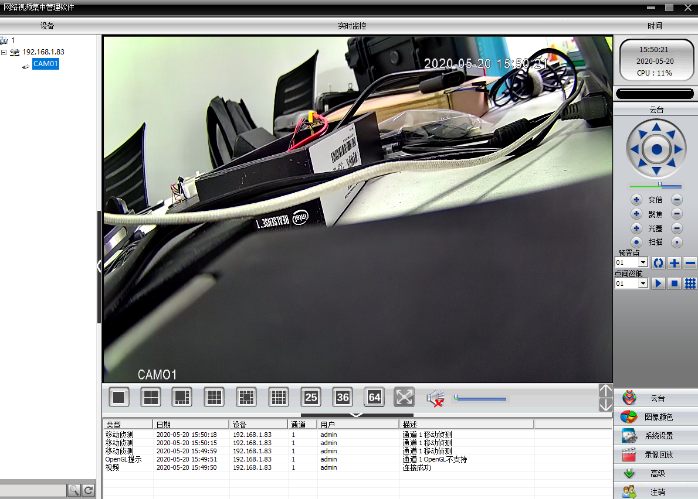
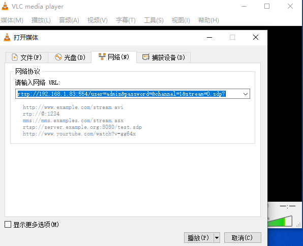
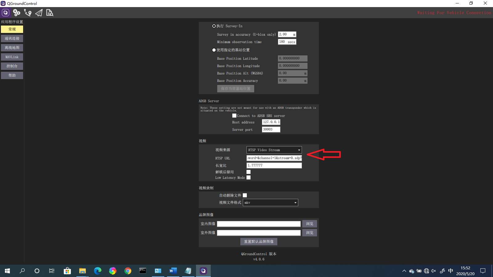
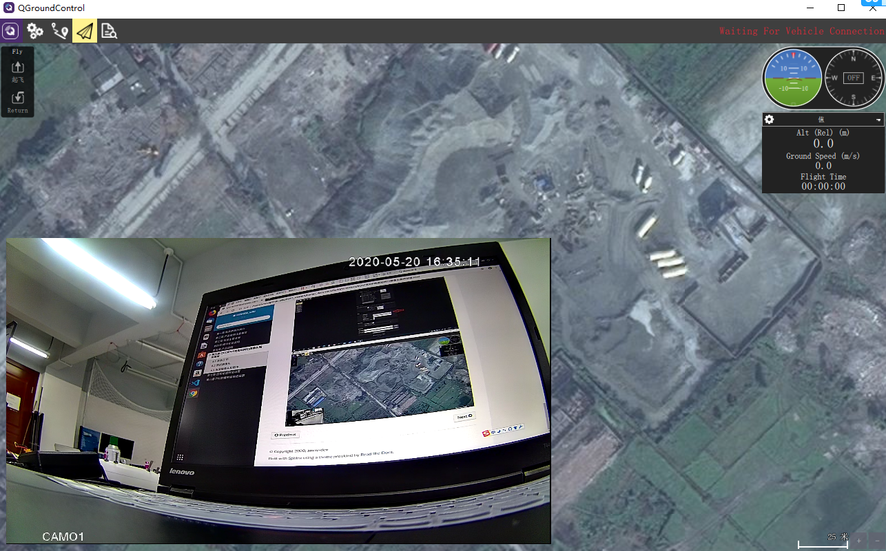

QGC和MP地面站网口摄像头图传链接¶
6.1 准备工作¶
安装摄像头电脑客户端，VLC，QGC，了解RTSP网络传输协议，具备基本的TCP/IP网络链接知识。 上面软件的下载地址为：
- 1.QGC链接：https://pan.baidu.com/s/1J-iOP1VOdHNZi3bK_dVx2w
- 提取码：4h3u
- 2.摄像头电脑客户端和VLC链接：https://pan.baidu.com/s/1OUhhKr80nOSNILc5qti2GA
- 提取码：rr5b
6.2 测试摄像头¶
- 网络摄像头出厂默认IP为192.168.1.10，链接到PC的时候确保在同一网段，也就是PC的IP地址最好设置为192.168.1.X 的网段
- 关闭无线网络，将网络摄像头用网线连接到电脑，ping一下摄像头的IP确保连接；

- 打开摄像头电脑客户端CMS，直接登录；
- 点击系统设置——监测点管理——添加区域——添加设备——IP搜索——添加设备；
- 如果搜不到设备，可以手动添加设备。在IP地址输入192.168.1.10

- 双击设备，显示图像，说明摄像头工作正常。

- 修改摄像头IP：设备配置——192.168.1.10——网络设置——修改IP地址，子网掩码，默认网关，DNS等信息；

- 点击确定，等待保存。

设置端口的原因是图传端的网络地址，可以对应起来，确保图传的网络可以ping通这个网络摄像头即可。有的时候IP冲突导致IP分配 异常，换一个新的IP即可。我们出厂的网络摄像头，不修改的话是192.168.1.10.
- 根据设置的IP，在电脑客户端重新添加摄像头。
6.3 连接摄像头和图传¶
- 把图传地面端用网线接到电脑，确保图传地面端与空中端连接成功，地面端和移动端可以相互ping通;
- 用网线连接网络摄像头与移动端图传;

- 整体连接图如下；

- 用电脑能够ping通网络摄像头的IP;

- 再用摄像头电脑客户端CMS测试摄像头图像是否正常;

- 测试RTSP格式的视频流：打开VLC——媒体——打开网络串流——网络——输入URL。
- URL示例： rtsp://192.168.1.83:554/user=admin&password=&channel=1&stream=0.sdp? 确保网络摄像头的IP，如果默认192.168.1.10，被修改了就按照修改的IP地址，可以ping通就行。

- 点击播放，显示摄像头图像;
- 用同样的URL可以在GQC地面站添加RTSP视频流：视频来源选择RTSP，URL输入测试通过的URL：
- rtsp://192.168.1.83:554/user=admin&password=&channel=1&stream=0.sdp?
 